La interfaz en papel
Así queda Vina con lo decidido el 2 de octubre de 2026: la hoja es papel, y la barra de arriba, la línea al pie y los paneles van en oscuro. Son capturas de producción con el patrón de María (1366 × 768), retocadas dentro del navegador. El documento que lo explica es ../2026-10-02-interfaz-en-papel-design.md.
Hoy, para comparar
Solo el patrón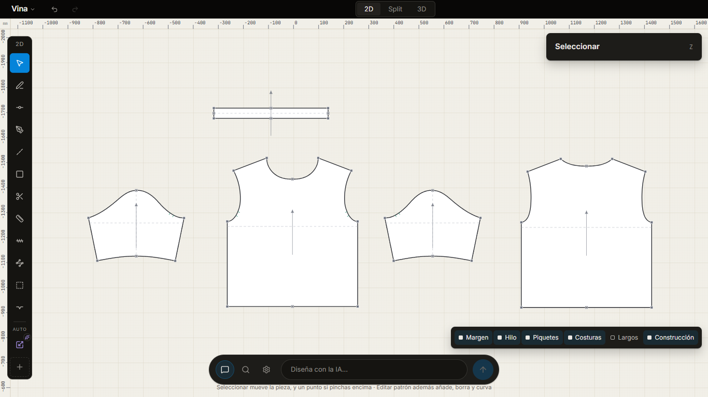
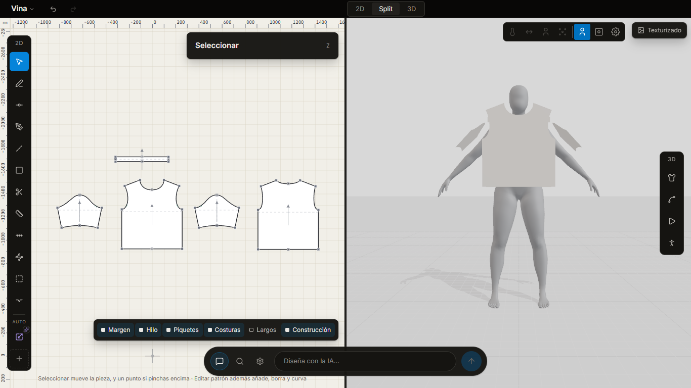
1 · En reposo
La barra de arriba y la línea al pie, en oscuro. Las herramientas, en el margen de la hoja. La línea al pie dice siempre qué herramienta está activa y cuál es su tecla.
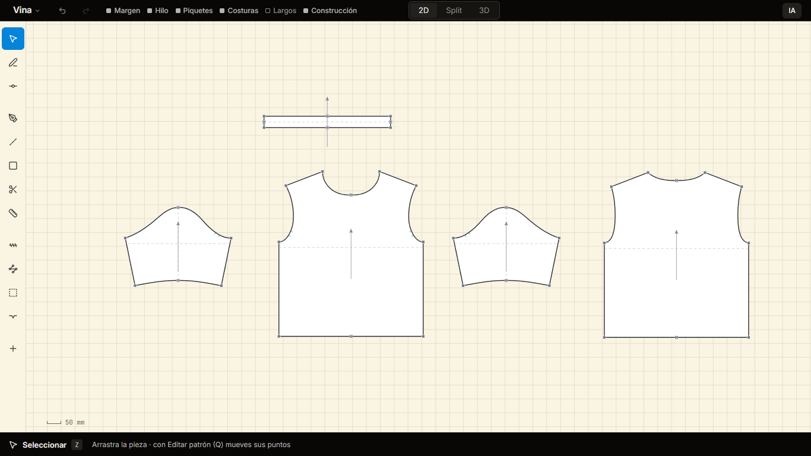
2 · Con una pieza seleccionada
Una medida a la vez, que se escribe ahí mismo; Tab pasa a la siguiente. Y cuatro acciones.
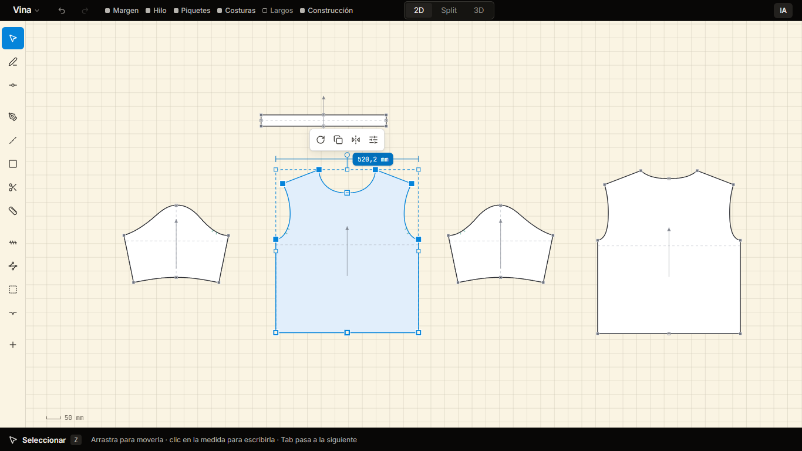
3 · El piquete, antes de ponerlo
La forma, la cantidad, la profundidad y el ancho están en la línea al pie, a un clic, antes de tocar el patrón.
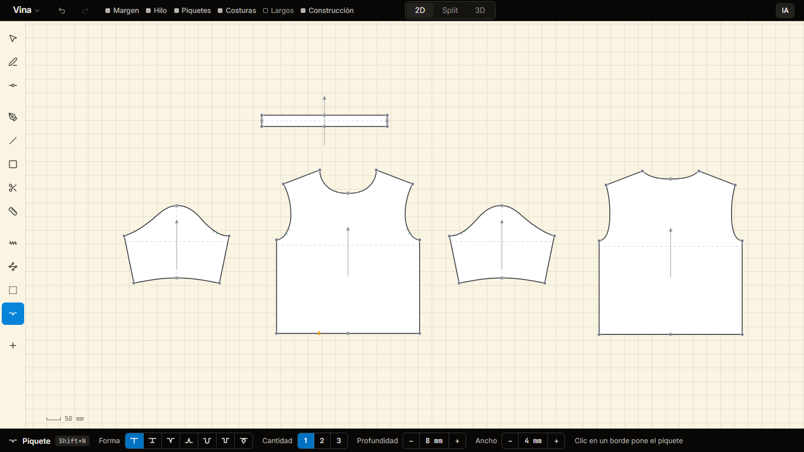
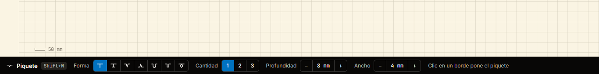
4 · El piquete, después del clic
La distancia se escribe sobre el borde, y el piquete se mueve con cada tecla. Al lado dice cuánto mide el borde, y un círculo marca desde qué esquina se cuenta.
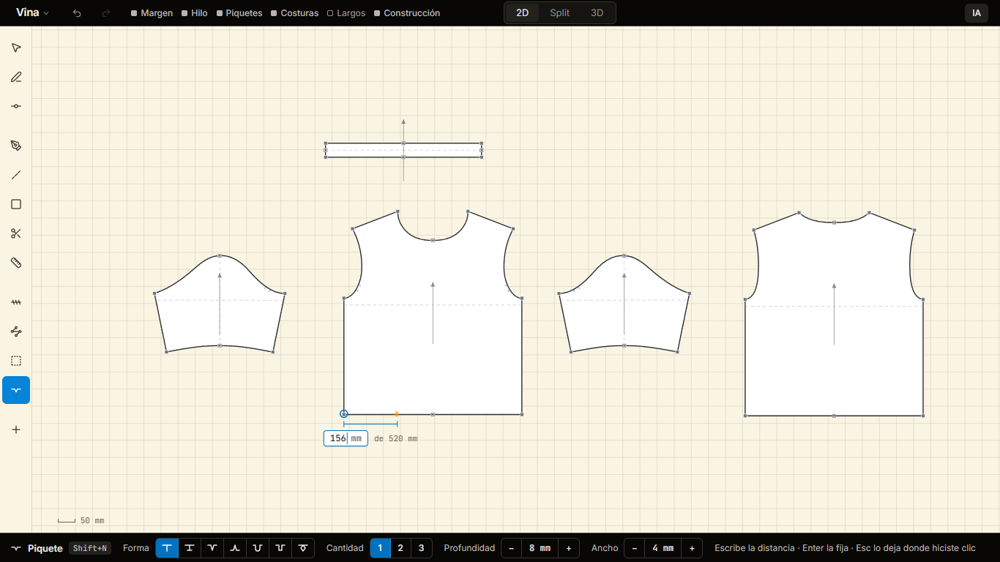
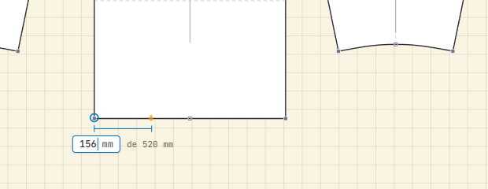
5 · Patrón y prenda
Lo que se ve del patrón, arriba a la izquierda; lo que se ve de la prenda, arriba a la derecha. La línea al pie va de lado a lado: primero la herramienta del patrón, después la vista 3D.
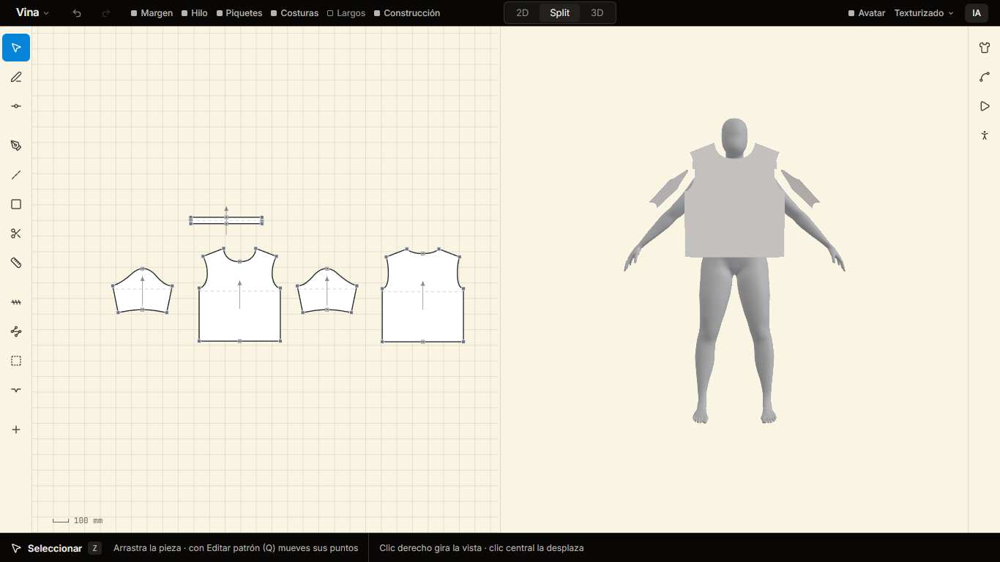
6 · Solo la prenda
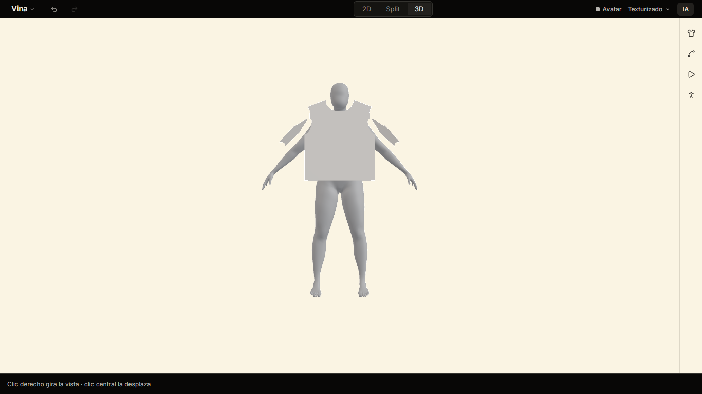
En la app real el avatar conserva una sombra suave bajo los pies. La maqueta no pudo dejarla sin el piso gris.
7 · La pantalla vacía
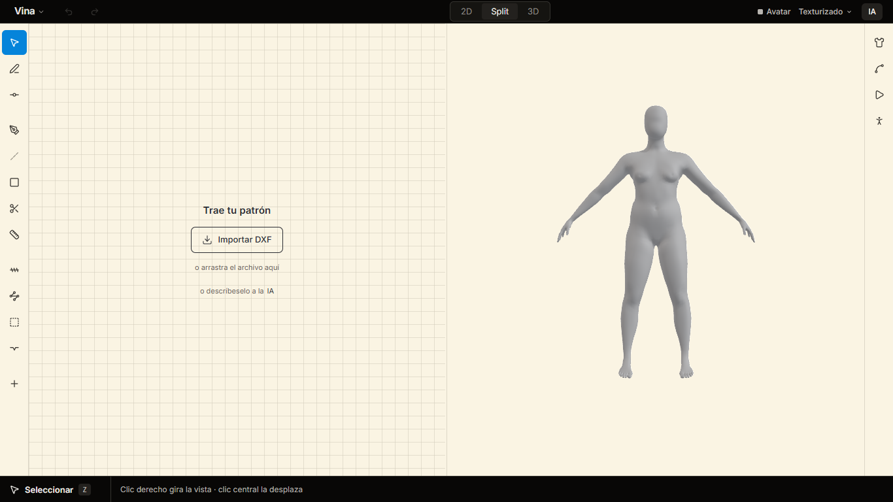
8 · Un panel, cuando se pide
A la derecha, pegado al borde y en oscuro. Cuatro campos; lo demás, plegado en «Producción». Al abrirse, las herramientas y el patrón se quedan donde estaban: lo que cae debajo del panel queda tapado.
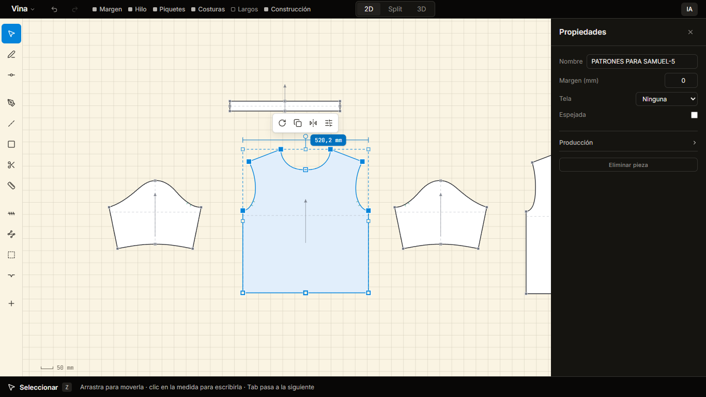
9 · La IA, cuando se llama
Una línea y un solo modo. Esc la cierra. Lo que flota sobre el papel es claro: esta barra, la barrita de la pieza, los menús.
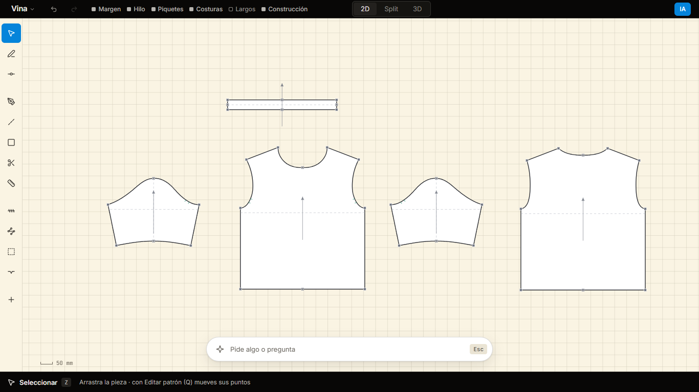
10 · La pantalla de María
1366 × 643, con patrón y prenda a la vez, y el piquete activo. Caben las cuatro opciones.
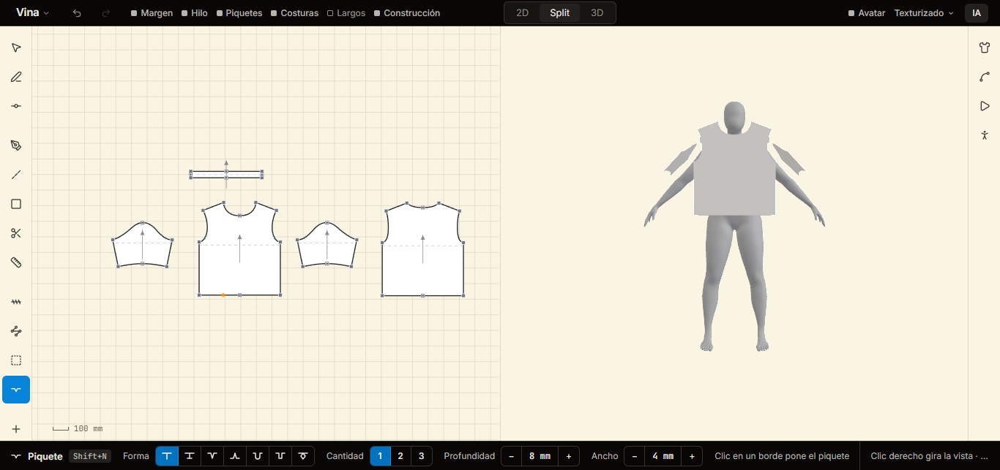
11 · El modo oscuro
Cambia la hoja, que pasa a gris neutro; el marco es el mismo. Las piezas siguen blancas. El claro es el de fábrica; el oscuro se escoge.
En reposo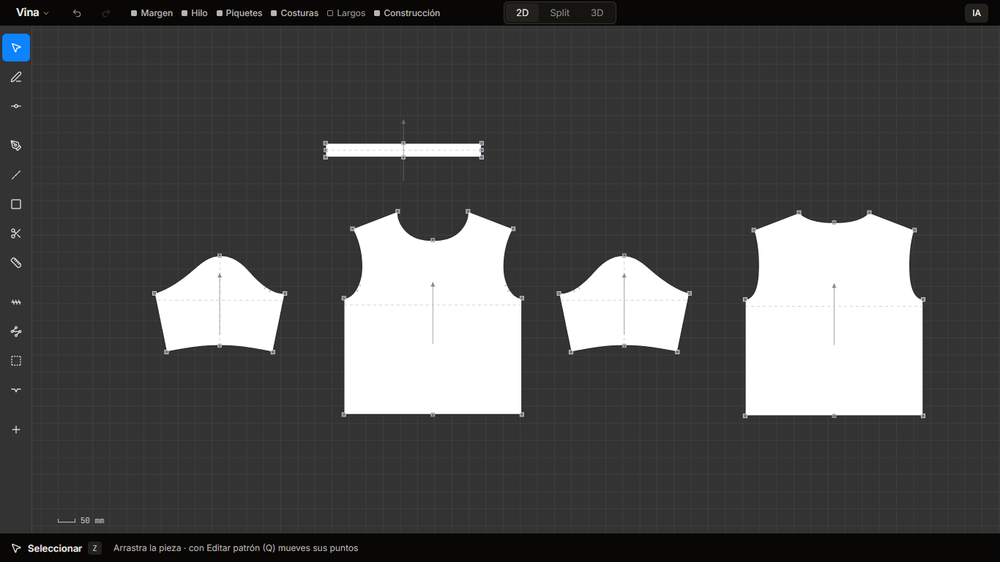
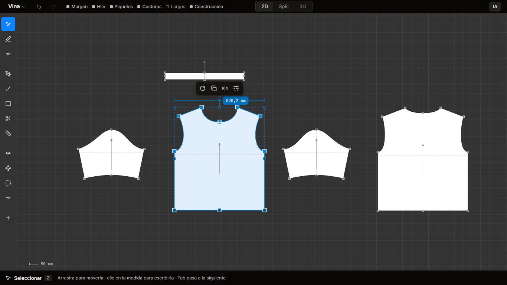
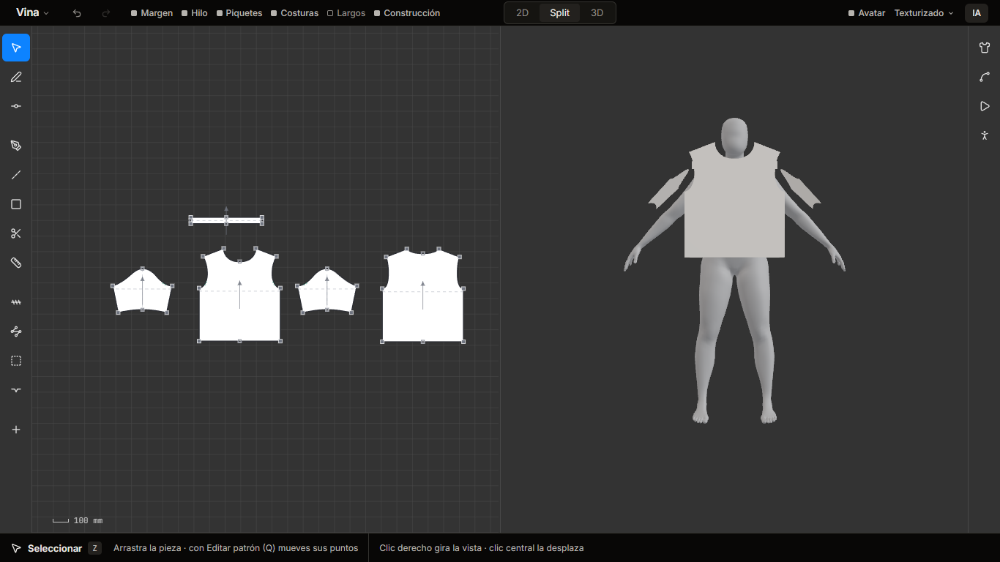